1Acceso al sistema
1.1 Desde el portal Índice
Todas las herramientas del sistema de créditos de OxoHotel se abren desde un portal de acceso único ("Índice"). Allí encontrarás tres tarjetas: Formulario de Solicitud (para hoteles y ejecutivos), Panel de Administración (para el equipo de Crédito y Cartera) y Consulta de Cupos de Crédito, que es la que te corresponde como parte del equipo de Reservas.
Ubica la tarjeta "Consulta de Cupos de Crédito"
Tiene la etiqueta Consulta de créditos y describe sus funciones: directorio completo de créditos activos, filtros por hotel/estado/vigencia, vista de vigencia documental y exportación de datos.
Haz clic en "Consultar créditos"
El botón abre el Portal de Consulta de Créditos en una pestaña nueva del navegador.
El botón de luna/sol en la esquina superior derecha alterna el portal Índice entre modo claro y modo oscuro; es solo una preferencia visual y no afecta la información mostrada.


1.2 Inicio de sesión
Al abrir el portal verás la pantalla de inicio de sesión, con el logotipo de OxoHotel y el rótulo "Portal de Créditos Corporativos".
Ingresa tu correo electrónico y contraseña
Usa las credenciales que te fueron asignadas por el administrador del sistema. El ícono del ojo, dentro del campo de contraseña, permite mostrar u ocultar lo digitado para verificar que esté correcto.
Presiona "Iniciar sesión"
Si los datos son correctos, entrarás directamente al Dashboard. Tu sesión permanece activa mientras uses el portal; si pasas varias horas sin actividad, deberás iniciar sesión nuevamente.
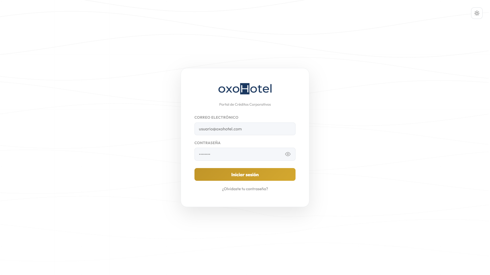
1.3 Recuperar contraseña
Si olvidaste tu contraseña, puedes restablecerla tú mismo en dos pasos:
Solicita el código de recuperación
En la pantalla de inicio de sesión, haz clic en "¿Olvidaste tu contraseña?", escribe el correo electrónico registrado y presiona "Enviar código de recuperación". Llegará un correo con un código de 6 dígitos, válido durante 10 minutos.
Ingresa el código y define una nueva contraseña
Escribe el código recibido y una nueva contraseña de al menos 6 caracteres, luego confirma con "Restablecer contraseña". Al finalizar, vuelve a la pantalla de inicio de sesión con tu nueva contraseña.
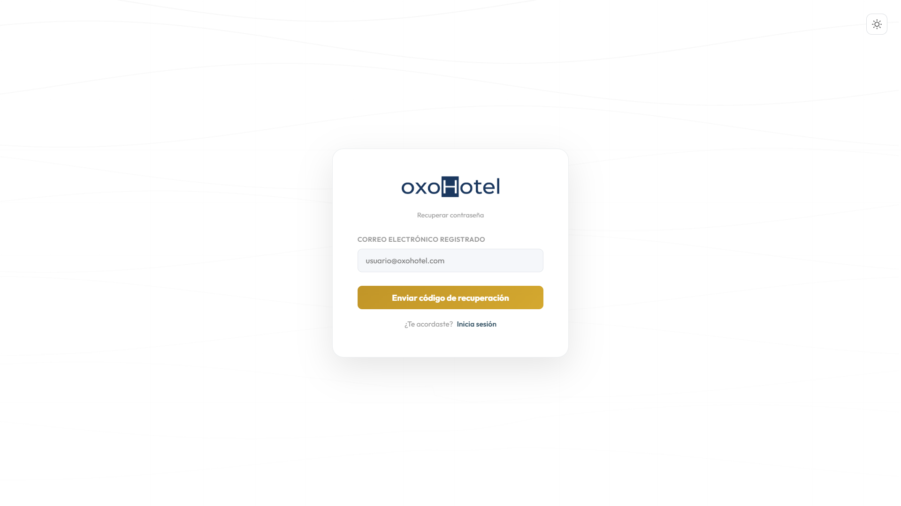
2Dashboard
Al iniciar sesión llegas directamente al Dashboard, un resumen visual del estado general de los créditos corporativos. En la parte superior siempre encontrarás el encabezado global: el título de la vista, el buscador rápido (empresa, NIT u hotel — también se activa con Ctrl+K), el botón de actualizar datos, el interruptor de modo claro/oscuro y la campana de notificaciones.
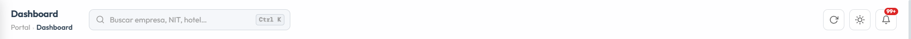
2.1 Indicadores (KPIs)
Justo debajo del selector de período ("Todo", "Hoy", "Esta semana", "Este mes" o "Este año") se muestran cuatro tarjetas con los indicadores clave:
| Indicador | Qué muestra |
|---|---|
| Créditos activos | Cantidad de créditos aprobados que están vigentes en este momento. |
| Doc. vigentes | Créditos cuya documentación de soporte está al día. |
| Doc. no vigentes | Créditos con documentación vencida. |
| Por vencer (15D) | Créditos cuya documentación vence dentro de los próximos 15 días. |
Cada tarjeta es interactiva: al hacer clic sobre ella, el portal te lleva a la vista Créditos con el filtro correspondiente ya aplicado (por ejemplo, "Créditos activos" filtra automáticamente por estado "Activo").
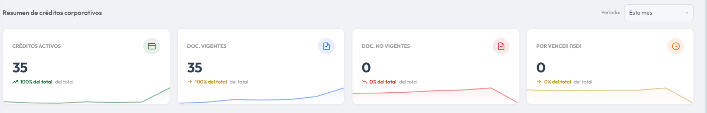
2.2 Gráficas
El Dashboard incluye dos gráficas, ambas con flechas para alternar entre dos tipos de visualización:
- Evolución de créditos: muestra la cantidad total de créditos mes a mes. Puede verse como línea de área o como barras, usando las flechas ‹ › del encabezado de la tarjeta.
- Distribución por estado: muestra la proporción de créditos según su estado (Activo, Por Vencer, Vencido, Bloqueado Corporativo, Bloqueado Gerencia). Puede verse como anillo o como torta (pie), también con las flechas ‹ ›.
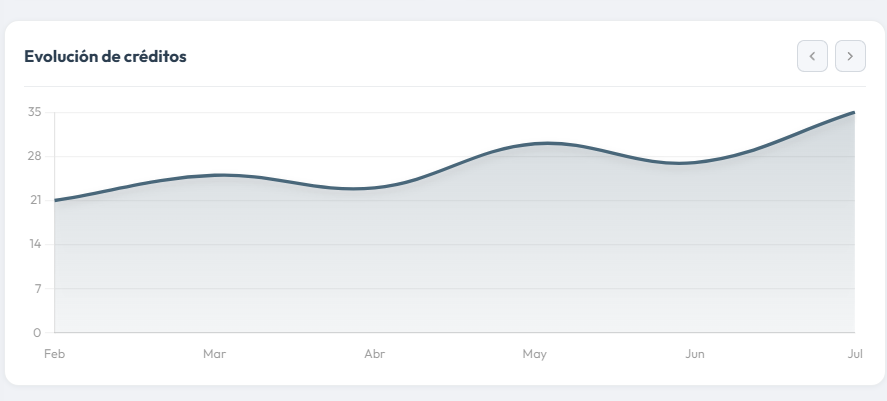
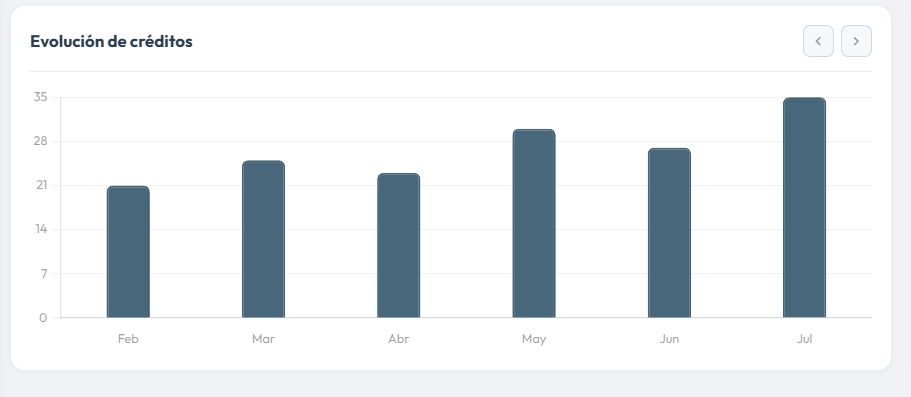
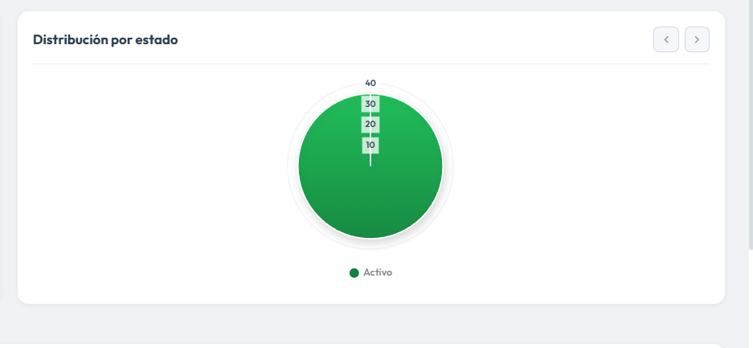
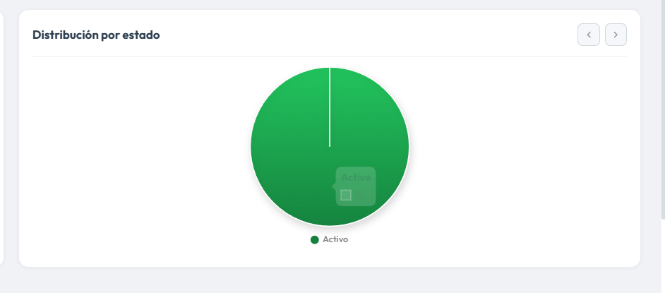
2.3 Créditos recientes y detalle de un crédito
Debajo de las gráficas encontrarás la tabla Créditos recientes, con las últimas empresas aprobadas: empresa, hotel, monto del cupo, fecha de aprobación, estado, vigencia del documento y la casilla de perfil. El botón "Ver todos" te lleva a la vista completa de Créditos.
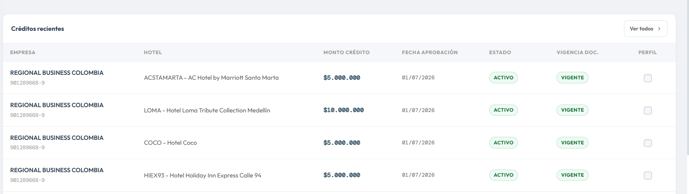
Al hacer clic sobre cualquier fila (o sobre una tarjeta KPI ya filtrada) se abre un panel lateral deslizante con el detalle completo del crédito: razón social, NIT, hotel, monto, fecha y responsable de la aprobación, estado, quién lo solicitó, vigencia de documentos, fechas de recepción y vencimiento de documentos, y correo de facturación electrónica.
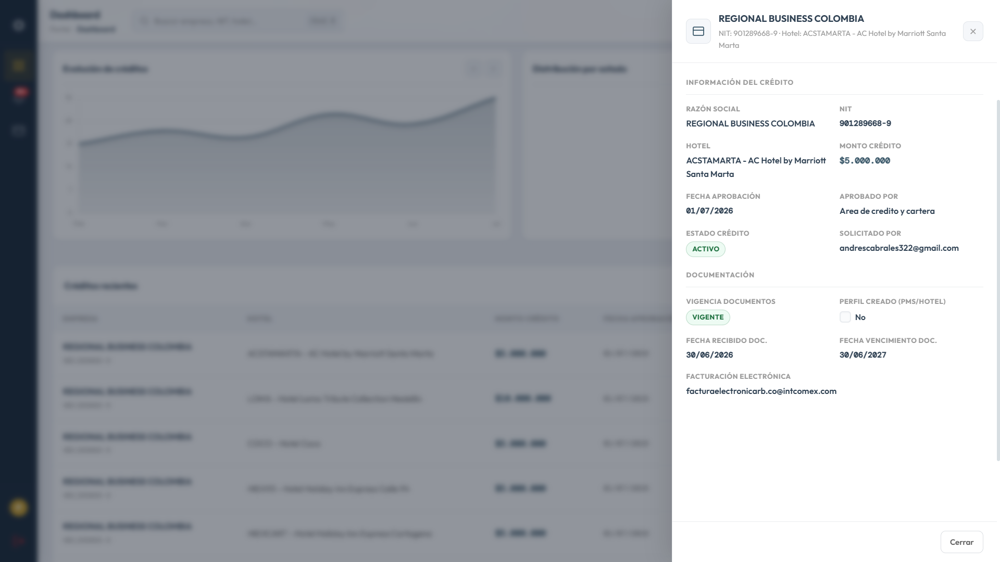
Para cerrar el panel, presiona la "X", el botón "Cerrar" al pie, la tecla Esc, o haz clic fuera del panel.
El interruptor de modo claro/oscuro del encabezado global aplica a todo el portal, incluidas las gráficas, que ajustan automáticamente sus colores.
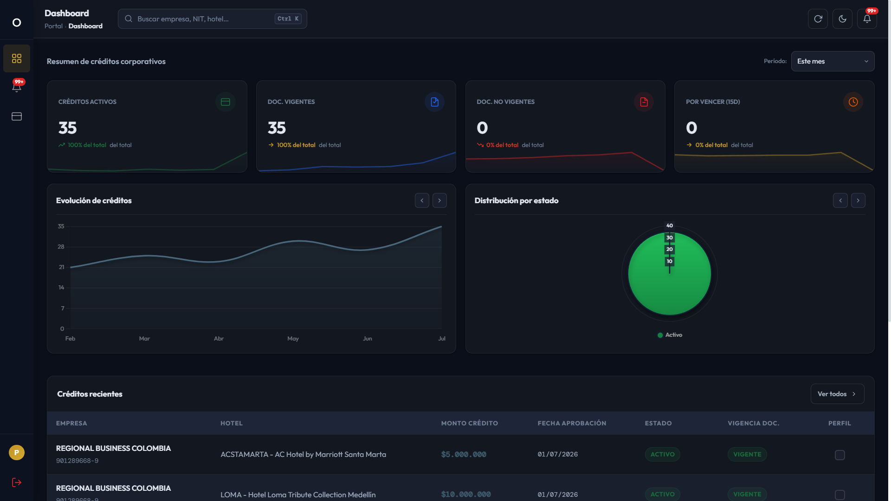
3Consultar créditos
Desde el ícono Créditos del menú lateral accedes al listado completo de créditos corporativos aprobados y activos, con todos los datos operativos que necesita el equipo de Reservas para atender a un huésped corporativo.
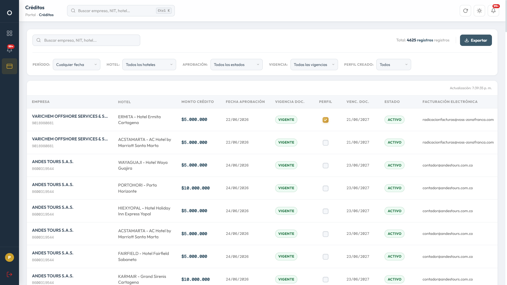
3.1 Buscar y filtrar
Puedes acotar el listado combinando cualquiera de estos filtros:
| Filtro | Uso |
|---|---|
| Buscador | Escribe razón social, NIT o nombre del hotel para encontrar coincidencias al instante. |
| Período | Filtra por fecha de aprobación: hoy, esta semana, este mes, este año o un rango de fechas personalizado. |
| Hotel | Muestra únicamente los créditos asociados a un hotel específico. |
| Aprobación | Filtra por estado del crédito: Activo, Por Vencer, Vencido, Bloqueado Corporativo o Bloqueado Gerencia. |
| Vigencia | Filtra por vigencia documental: Vigente, No Vigente o Por Vencer. |
| Perfil creado | Filtra según si ya se marcó o no el perfil del cliente como creado en el PMS del hotel. |
El contador "Total: N registros" se actualiza según los filtros activos. Cuando hay al menos un filtro aplicado, aparece el botón con ícono de bote de basura para limpiar todos los filtros de un solo clic.
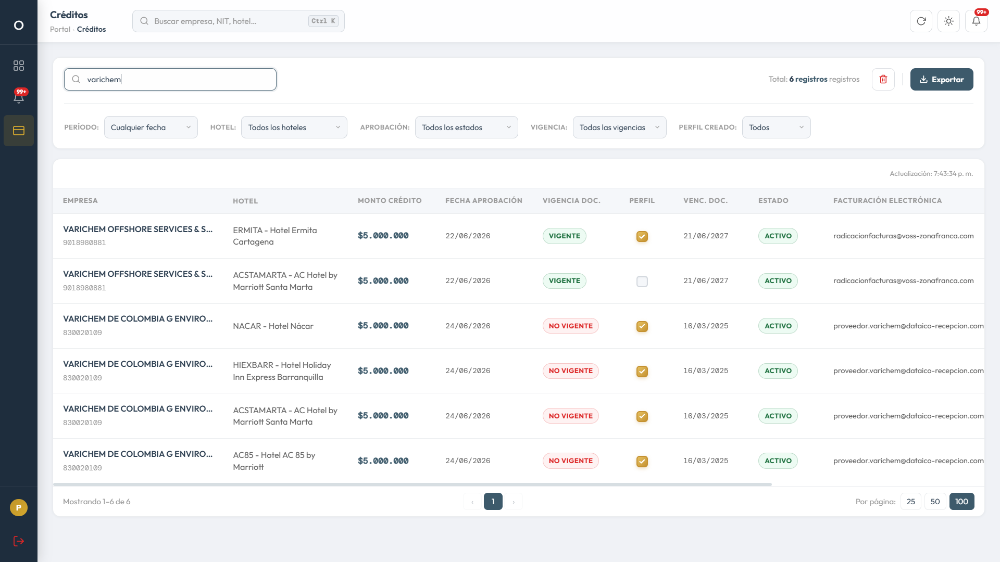
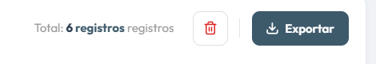
3.2 Leer la tabla de resultados
Cada fila corresponde a un crédito asignado a un hotel específico, con estas columnas:
- Empresa: razón social y NIT del cliente corporativo.
- Hotel: código y nombre del hotel al que aplica ese cupo.
- Monto crédito: cupo aprobado para ese hotel.
- Fecha aprobación y Venc. doc.: fechas clave del crédito y su documentación.
- Vigencia doc. y Estado: insignias de color (verde, ámbar o rojo) que indican rápidamente la situación.
- Perfil: casilla que indica si el perfil del cliente ya fue creado en el sistema del hotel (ver sección 5).
- Facturación electrónica, Aprobado por y Novedades: datos de apoyo para la gestión de la reserva.
Haz clic en cualquier parte de la fila (fuera de la casilla de Perfil) para abrir el panel lateral con el detalle completo de ese crédito, igual que en el Dashboard.
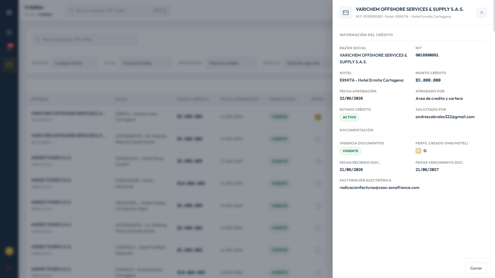
Al final de la tabla encontrarás la barra de paginación, donde puedes moverte entre páginas y elegir cuántos registros ver por página (25, 50 o 100).
3.3 Exportar resultados
El botón "Exportar", junto al contador de registros, ofrece dos formatos:
- Excel (.xlsx): genera un archivo con todos los créditos que cumplen los filtros aplicados (sin importar cuántas páginas tengan) y lo abre listo para descargar en una pestaña nueva.
- CSV (.csv): descarga directamente en tu navegador los registros que están cargados en la página actual de la tabla. Si quieres que el CSV incluya el listado filtrado completo, primero aumenta el tamaño de página (50 o 100) o revisa que no queden resultados en otras páginas.
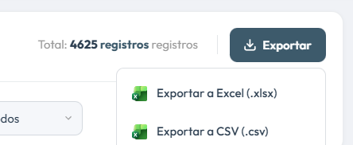
4Notificaciones
La campana del encabezado global avisa sobre documentos de crédito vencidos o próximos a vencer (dentro de los siguientes 15 días). El número en rojo indica cuántas notificaciones no has leído todavía.
Al hacer clic en la campana se abre un menú desplegable con las notificaciones más recientes y un botón para "Marcar todas leídas". Desde ahí también puedes ir a "Ver todas las notificaciones" para la vista completa.
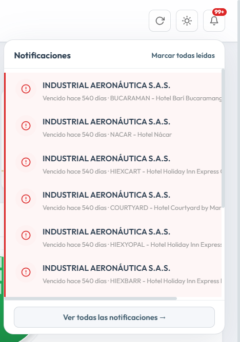
En la vista completa, cada notificación se muestra como una tarjeta con la empresa, el NIT, el hotel, una insignia de VENCIDO o POR VENCER y cuántos días han pasado o faltan. El chip "Nueva"/"Leída" a la derecha se puede pulsar para marcar esa notificación puntual como leída o no leída; el botón "Marcar todas como leídas" lo hace para todas a la vez, y "Actualizar" refresca el listado. Al hacer clic sobre una tarjeta se abre el panel de detalle del crédito correspondiente.
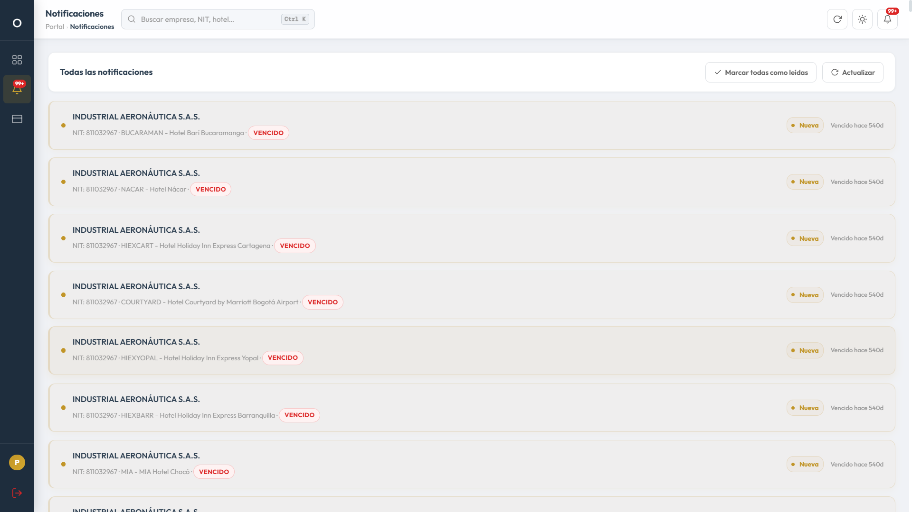
5Perfil PMS y cerrar sesión
5.1 Casilla "Perfil creado (PMS/Hotel)"
En la tabla de créditos y en el panel de detalle existe un campo llamado "Perfil creado (PMS/Hotel)". Este campo no tiene relación con el usuario con el que inicias sesión en el portal: indica si el hotel ya creó el perfil del cliente corporativo en su propio sistema de gestión hotelera (PMS), para poder facturarle con el crédito aprobado.
Es el único dato que el equipo de Reservas puede modificar en este portal. Marcarlo o desmarcarlo no aprueba, rechaza ni cambia el estado del crédito: solo deja constancia operativa de si el perfil ya existe en el PMS del hotel.
Haz clic en la casilla "Perfil" de la fila correspondiente
Disponible únicamente en la tabla de la vista Créditos (en el panel de detalle se muestra solo como información, sin poder editarse allí).
Confirma el cambio
Aparece la ventana "Confirmar cambio de perfil", preguntando si deseas marcar el perfil como Creado o No Creado. Presiona "Confirmar" para aplicar el cambio o "Cancelar" para descartarlo.
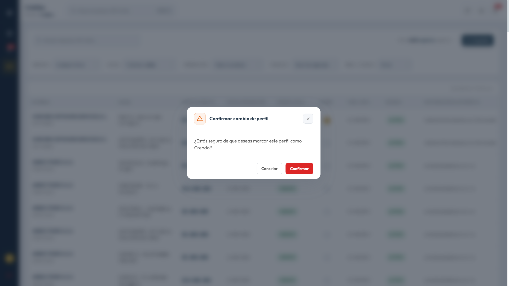
Revisa la confirmación
Al confirmar, un mensaje breve en la esquina de la pantalla indica que el cambio se guardó correctamente.
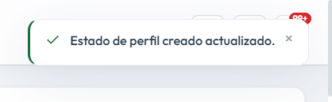
5.2 Cerrar sesión
Tu nombre y correo aparecen en la parte inferior del menú lateral. Debajo se encuentra el botón "Cerrar sesión".
Presiona "Cerrar sesión" en el menú lateral
Se abrirá la ventana de confirmación "Cerrar Sesión".
Confirma para salir del portal
Al presionar "Confirmar" se cierra tu sesión y vuelves a la pantalla de inicio de sesión. Si presionas "Cancelar", permaneces en el portal sin cambios.
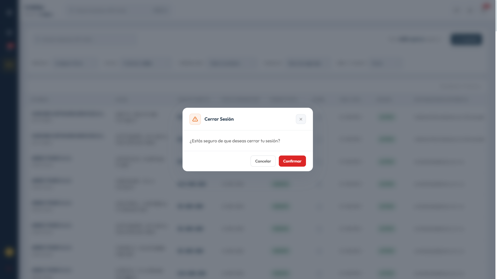